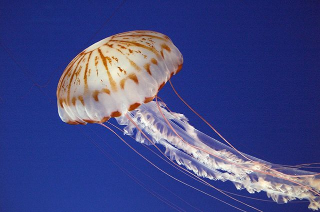

Морская крапива
Купол взрослой особи может достигать 30 сантиметров в диаметре, а длина каждого из 24 ее щупалец – двух метров. После контакта с этой медузой у человека появляется сыпь и ноющая боль, но это не угрожает жизни.

Купол взрослой особи может достигать 30 сантиметров в диаметре, а длина каждого из 24 ее щупалец – двух метров. После контакта с этой медузой у человека появляется сыпь и ноющая боль, но это не угрожает жизни.